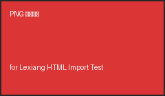
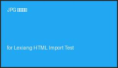
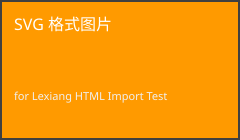
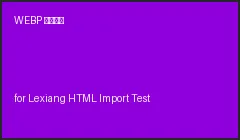
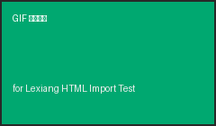

本文件所有图片通过相对路径引用本地 assets/ 目录下的图片文件，验证乐享导入时能否识别并处理本地相对路径图片。导入时需将本文件与 assets/ 目录一起提供。





验证要点：相对路径图片是否被识别、是否需要配套 assets 资源、srcset/picture 多源是否处理、图片链接是否正常。
说明：相对路径图片依赖 assets/ 目录，单独导入本 HTML 文件时图片必然缺失——这本身也是要验证的边界（乐享是否支持携带资源包导入）。